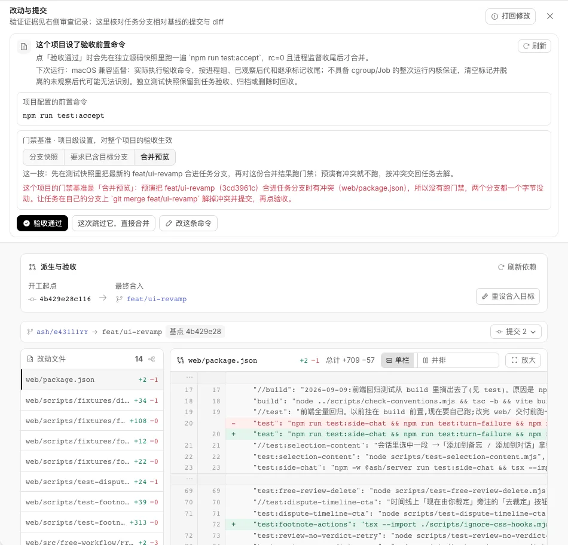
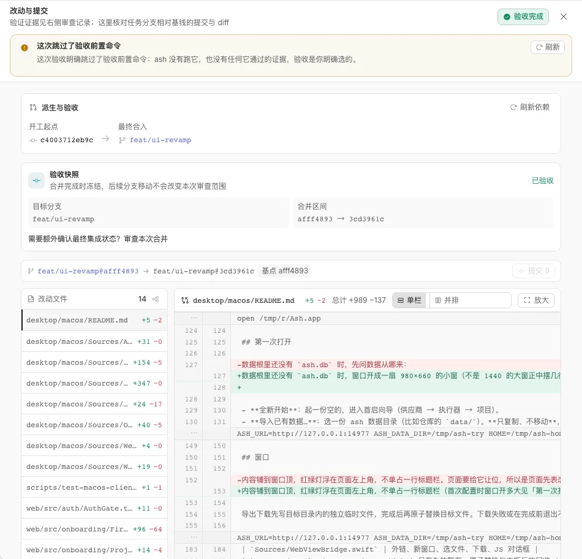

一行决定，一列前提，剩下全是 diff。
验收台上每句话只回答三件事里的一件：会合到哪、现在卡在哪、这一按会做什么。其余的收进它所属的那一行，点开才有。
- diff 上面的字
597106- 能点的地方
127- diff 从第几像素开始
582119- 量的是同一种场面：被合并预览的冲突拦住
模拟这次运行的结局
现在的样子


原来的每一块去了哪
| 标题「改动与提交」和它下面那句说明 | 删掉。那一行改放分支走向和改动量 |
|---|---|
| 「派生与验收」卡、验收快照卡、diff 上面的分支条 | 并成顶上一行。目标分支直接点开改，提交数点开看清单，验收后同一行换成合并区间 |
| 验收前置命令卡（标题、三段说明、命令框、门禁基准、按钮行） | 一行：命令 + 状态。点这一行看日志，指上去出设置 |
| 「验收通过」「这次跳过它，直接合并」「重跑一次」 | 只留「验收通过」。跳过、重跑、不提交，是确认层里那一步前面的勾 |
| 确认框里那几段话 | 步骤清单：运行、合并、提交、清理。取消哪一步，那一行自己写后果 |
| 未提交改动卡、冲突说明、审查过期提醒 | 各一行，行尾带它自己的那一个出路。红的拦验收，琥珀的只提醒 |
| 派生任务清单和「验收父任务及所选子任务」 | 清单留在前提那一列，勾了几个，主按钮就写验收几个 |
| 三颗刷新（刷新、刷新依赖、重新核对） | 不常驻。哪一行读失败了，那一行自己出「重试」（样机里没画） |
| 运行记录号、起止时间、监督方式说明 | 进日志那一层的页眉 |